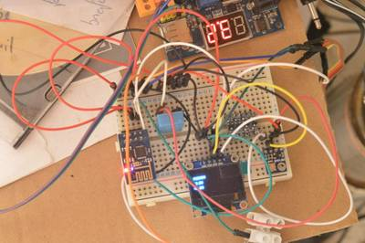
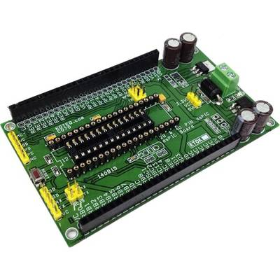

2016-10-13 - Nº 76

Editorial
Esta é a Newsletter Nº 76 que se apresenta com o mesmo formato que as anteriores. Se gostar da Newsletter partilhe-a!
Todas as Newsletters encontram-se indexadas no link.
Esta Newsletter tem os seguintes tópicos:
Faz hoje 132 anos que foi estabelecida a longitude do Meridiano de Tempo Universal (Universal Time) em Greenwich. E ficamos a saber esta semana que os "dois" Arduinos voltaram a entender-se e a unir a marca. Massimo Banzi e Federico Must, na MakerFaire de Nova Iorque apresentaram a novidade. Esta semana também foi apresentado um estudo na revista Nature onde é anunciado um novo tipo de redes neuronais designado por redes neuronais diferenciáveis. Uma empresa finlandesa - a Cajo Technologies - desenvolveu uma nova tecnologia laser que consegue reproduzir em diversas superfícies padrões de cor distintos. Esta semana ficamos também a saber que a missão ExoMars 2016 irá entrar em órbita de MArte no próximo dia 19 e Outubro. Esta missão é resultado de uma joint-venture entre a ESA e Russa Roscosmos. A principal missão é fazer um inventário detalhado dos gases presentes na atmosfera deste planeta.
Na Newsletter desta semana apresentamos diversos projetos de maker assim como alguns modelos 3D que poderão ser úteis. Na rubrica "Documentação" apresentamos um livro sobre o essencial do C e a newelectronics de 11 de Outubro 2016.
 João Alves ([email protected])
João Alves ([email protected])
O conteúdo da Newsletter encontra-se sob a licença  Creative Commons Attribution-NonCommercial-ShareAlike 4.0 International License.
Creative Commons Attribution-NonCommercial-ShareAlike 4.0 International License.
Novidades da Semana ^
TWO ARDUINOS BECOME ONE
"Arduino, the worlds leading open-source ecosystem for educators, Makers and IoT developers of all ages, today announced that Arduino LLC (aka Arduino.cc) and Arduino srl (aka Arduino.org) have settled their differences and signed a settlement agreement. Massimo Banzi and Federico Musto took the stage today at World Maker Faire New York to announce the good news. At the end of 2016, the newly created Arduino Holding will become the single point of contact for the wholesale distribution of all current and future products, and will continue to bring tremendous innovations to the market." [...]
Differentiable neural computers
"In a recent study in Nature, we introduce a form of memory-augmented neural network called a differentiable neural computer, and show that it can learn to use its memory to answer questions about complex, structured data, including artificially generated stories, family trees, and even a map of the London Underground. We also show that it can solve a block puzzle game using reinforcement learning." [...]
Finnish Laser Marking Machine Provider Cajo Technologies heads to US markets
"Cajo Technologies, a Finnish manufacturer of laser marking machinery, is expanding to the US. Cajo Technologies has developed a new way of producing permanent laser markings and color patterns on almost any imaginable material. The already up-and-running subsidiary Cajo Technologies Inc. has started to build its organization and begin local recruiting. Its very first marking machines have also been sold and delivered." [...]
EXOMARS arrives at the red planet
"The ExoMars 2016 mission will enter orbit around the Red Planet on 19 October. At the same time, its Schiaparelli lander will descend to the surface. Representatives of traditional and social media are invited to attend a two-day event at ESAs ESOC control centre in Darmstadt, Germany. ExoMars is a joint endeavour between ESA and Russias Roscosmos space agency, and comprises the Trace Gas Orbiter (TGO) and the Schiaparelli entry, descent and landing demonstrator. TGO will make a detailed inventory of Mars atmospheric gases, with particular interest in rare gases like methane, which implies that there is an active, current source. TGO aims to measure methanes geographical and seasonal dependence and help to determine whether it stems from a geological or biological source." [...]
Outras Notícias
- Murata to acquire IPDiA, a leader in high performance silicon capacitors
- Meet BeagleBone Black Wireless, the newest board in the BeagleBone family
- An open source font system for everyone
- Intels Stratix 10 FPGA: Supporting the Smart and Connected Revolution
- Hyperloop One and Dubai Future Accelerators will build the first hyperloop for cargo
- World's first large-scale tidal energy farm launches in Scotland
- Alcatel-Lucent Submarine Networks and Nokia Bell Labs achieve 65 Terabit-per-second transmission record for transoceanic cable systems
Ciência e Tecnologia ^
Smallest. Transistor. Ever. - Berkeley Lab-led research breaks major barrier in transistor size by creating gate only 1 nanometer long
"For more than a decade, engineers have been eyeing the finish line in the race to shrink the size of components in integrated circuits. They knew that the laws of physics had set a 5-nanometer threshold on the size of transistor gates among conventional semiconductors, about one-quarter the size of high-end 20-nanometer-gate transistors now on the market. Some laws are made to be broken, or at least challenged. A research team led by faculty scientist Ali Javey at the Department of Energys Lawrence Berkeley National Laboratory (Berkeley Lab) has done just that by creating a transistor with a working 1-nanometer gate. For comparison, a strand of human hair is about 50,000 nanometers thick." [...]
Science at cusp of transformational grasp of life via cell modeling, researchers say
"A new paper recently published in the Journal of Molecular Biology shows how advances in molecular biology and computer science around the world soon may lead to a three-dimensional computer model of a cell, the fundamental unit of life. According to the authors, the development could herald a new era for biological research, medical science, and human and animal health. The study, titled Challenges in structural approaches to cell modeling, surveys a range of methodologies joining the march toward a simulated whole 3-D cell, including the studies of biological networks, automated construction of 3-D cell models with experimental data, modeling of protein complexes, prediction of protein interactions, thermodynamic and kinetic effects of crowding cellular membrane modeling, and modeling of chromosomes." [...]
3-D-PRINTED ROBOTS WITH SHOCK-ABSORBING SKINS
"Anyone whos watched drone videos or an episode of BattleBots knows that robots can break and often its because they dont have the proper padding to protect themselves. But this week researchers at MITs Computer Science and Artificial Intelligence Laboratory (CSAIL) will present a new method for 3-D printing soft materials that make robots safer and more precise in their movements and that could be used to improve the durability of drones, phones, shoes, helmets, and more. The teams programmable viscoelastic material (PVM) technique allows users to program every single part of a 3D-printed object to the exact levels of stiffness and elasticity they want, depending on the task they need for it." [...]
DESIGNING FOR 3-D PRINTING
"3-D printing has progressed over the last decade to include multi-material fabrication, enabling production of powerful, functional objects. While many advances have been made, it still has been difficult for non-programmers to create objects made of many materials (or mixtures of materials) without a more user-friendly interface. But this week, a team from MIT's Computer Science and Artificial Intelligence Laboratory (CSAIL) will present Foundry, a system for custom-designing a variety of 3-D printed objects with multiple materials." [...]
First demonstration of brain-inspired device to power artificial systems
"New research, led by the University of Southampton, has demonstrated that a nanoscale device, called a memristor, could be used to power artificial systems that can mimic the human brain. Artificial neural networks (ANNs) exhibit learning abilities and can perform tasks which are difficult for conventional computing systems, such as pattern recognition, on-line learning and classification. Practical ANN implementations are currently hampered by the lack of efficient hardware synapses; a key component that every ANN requires in large numbers." [...]
For first time, carbon nanotube transistors outperform silicon
"For decades, scientists have tried to harness the unique properties of carbon nanotubes to create high-performance electronics that are faster or consume less power resulting in longer battery life, faster wireless communication and faster processing speeds for devices like smartphones and laptops. But a number of challenges have impeded the development of high-performance transistors made of carbon nanotubes, tiny cylinders made of carbon just one atom thick. Consequently, their performance has lagged far behind semiconductors such as silicon and gallium arsenide used in computer chips and personal electronics. Now, for the first time, University of WisconsinMadison materials engineers have created carbon nanotube transistors that outperform state-of-the-art silicon transistors." [...]
Silkworms Spin Super-Silk After Eating Carbon Nanotubes and Graphene
"Silkthe stuff of lustrous, glamorous clothingis very strong. Researchers now report a clever way to make the gossamer threads even stronger and tougher: by feeding silkworms graphene or single-walled carbon nanotubes. The reinforced silk produced by the silkworms could be used in applications such as durable protective fabrics, biodegradable medical implants, and ecofriendly wearable electronics, they say. Researchers have previously added dyes, antimicrobial agents, conductive polymers, and nanoparticles to silkeither by treating spun silk with the additives or, in some cases, by directly feeding the additives to silkworms. Silkworms, the larvae of mulberry-eating silk moths, spin their threads from a solution of silk protein produced in their salivary glands." [...]
Documentação ^
A documentação é parte essencial do processo de aprendizagem e a Internet além de artigos interessantes de explorar também tem alguma documentação em formato PDF interessante de ler. Todos os links aqui apresentados são para conteúdo disponibilizado livremente pelo editor do livro.
Learn C essentials
"The C programming language been used to program everything from the tiny microcontrollers used in watches and toasters up to huge software systems most of Linux (and Raspbian itself) is written in it. Learn to code with C on your Raspberry Pi across 13 packed chapters: Create variables & do arithmetic; Control the flow of your C programs; For loops and case statements; Understand and create functions; Work with arrays and strings; Interpreting user input; and much more." [...]
newelectronics 11 Outubro 2016
"New Electronics is a fortnightly magazine focusing on technological innovation, news and the latest developments in the electronics sector. Downloadable as a digital page turner or pdf file, or offered as a hard copy, the New Electronics magazine is available in a format to suit you." [...]
Modelos 3D ^
Com a disponibilidade de ferramentas que permitem dar azo a nossa imaginação na criação de peças 3D e espaços como o thingiverse para as publicar, esta rubrica apresenta alguns modelos selecionados que poderão ser úteis.
Customisable Socket Tool Tray
"I wanted linkable trays to hold all my various sockets neatly and easily identifiable. The attached OpenSCAD file allows the size of the tray, cutouts for tools and text labels all to be customised. Simply measure tools, and enter the exact outside diameter in mm, in rows and columns as you would like them arranged. The tool automatically adds (an adjustable clearance) and centres the rows and columns. There is a switch for each side to add lip so that trays can be clipped together. Every adjustable parameter is at the top of the file so can be tweaked for your exact needs." [...]
Braille Learning Board V2
"This 3d model is a board that can be used to teach people braille. All of the letters of the alphabet are on this board. The V2 version can be read by totally blind people due to guide lines on the outside. One dash is the first line, two dashes is the second line." [...]
Angle Layout and Assembly Tool
"Here is a handy tool for use when you need to transfer or compare an angle. Most of the time this type of tool is used for measuring, transfering and comparing 90 degrees. This version will go from 53 degrees (acute) to 306 degrees (obtuse). A full size commerical layout tool I have is about 130mm per leg, this one is 100mm. Close enough with the added benefit of fitting into some locations where a shorter tool works better. For woodworking, you could print up 4 of these, glue them fixed at 90 degrees and use them for angle squares on boxes, frames, etc. For such an application, you bar clamp (or web/band clamp) these assembly squares around your project for dry-fiting or final glue-up." [...]
Projetos Maker ^
Diversos Projetos interessantes.
ACS714-30A Current Sensor module
"The Allegro ACS714-30A provides economical and precise solution for AC or DC current sensing in automotive systems. The device package allows for easy implementation by the customer. Typical applications include motor control, load detection and management, switched-mode power supplies, and overcurrent protection." [...]
Wireless Communication Using Cheap 433MHz RF Modules and Pic Microcontrollers. Part 1
"Sending data over an RF link to a PC. There are many articles on the internet describing how someone can add wireless capabilities to a project. A plethora range of options and technologies exist and the choice is based upon the specific application. In general, sub-1GHz frequencies are used for long range applications. The selection of the rf module is made after considering amongst others, the desired range, bandwidth, reliability and cost. Obviously, the cheaper the module, the less reliable it is. Most of the hobby projects on the internet that employ RF communication, use Arduinos and special software libraries, like VirtualWire. The later provides Manchester encoding/decoding routines to balance the voltages used for the RF receiver gain averaging circuit. This instructable however, describes how you can make a Pic microcontroller talk to a cheap RF module (433MHz) through its USART port, to send data over a wireless link to another Pic. The first part demonstrates how to program a PIC12F1822 to send a simple string to an RF transmitter, and then how to get this string through an RF receiver and display it on a terminal application." [...]
RFID based automatic door system
"When we see sophisticated door management system(s), the price tag struck immediately along with the utility off-course. In countries like India, such automatic systems are not cheap by any yardstick. So, we decided to test a simple and cheap prototype to test if such a robust system could be developed using the tool of our choice, Arduino Uno. That's how we got started to develop this project and are very happy with the way it finally looks. Off course there are myriads of future extensions that we are planning to impose upon this project, but that's a topic for our next post." [...]
Obstacle Avoiding Robot Arduino
"In this tutorial, you will learn how to build a robot car which will avoid the obstacles present in its path. The concept can be used and applied in various ways according to the conditions." [...]

Using the 4 pins of the ESP8266-01
"The limited number (4) of GPIO pins on the ESP8266-01 may seem like an obstacle, for any serious application. Yet if one uses the pins in a smart way it is very well possible to do a lot with only those 4 pins. In some of my recent postings, I have shown the use of a DHT11 a DS18B20, an OLED, an RTC and a BMP180 with the ESP8266-01. In this posting I set out to use 4 sensors and a display, while also uploading the acquired data to Thingspeak. It actually is expanding on a project of monitoring the atmosphere in and around my chicken coop. Yes, you could call this a weatherstation, but it is just to illustrate the use of the 4 pins, you could easily make something else this way" [...]

PIC16F 28-pin Development Board with LCD
"This development board offers various important add-ons which we considered are important to a developer of Microcontroller based project from Microchip." [...]
18 PIN PIC Development Board with Header IO
"PIC16F 18-pin Development Board will help you with your prototyping. It works with any of Microchips 18 pin of 16F PIC microcontroller." [...]

40 Pin & 28 Pin dsPIC Development Board
"The dsPIC Development Board is a development and evaluation tool that helps create embedded applications using dsPIC30F Digital Signal Controllers for motor control family. Sockets are provided for 28 and 40-pin devices in the motor control family. The dsPIC Development board has been designed mainly for Motor dsPIC30F4011 Digital Signal Controller in the 40-pin motor control socket and dsPIC30F4012 28 Pin digital signal controller, the board can also be used with other dsPIC ICs. Board provided with 3.3V and 5V regulator, crystal oscillators and a programming connector. In addition, the board is populated with dual header connector for all I/O, reverse supply protection diode, onboard 3.3V & 5V LED, Screw terminal for supply input, push button switch for reset, 6 pin header connector for programming, serial communication header connector, jumpers for multi serial communication option , electrolytic capacitor for filters. Optional provision for LM317T TO220 Regulator for 3.3V and 5V and Jumper for 3.3V or 5V power supply selection to power up the dsPIC." [...]
40 PIN & 28 PIN PIC18F USB Development Board
"PIC18F USB Development Board will help you with your prototyping requirement with any 28/40-pin Microchip microcontroller supporting USB interface . The board has been tested using PIC18F4550 40 Pin & PIC18F2550 28 Pin Microcontroller." [...]
ESP8266 GMail sender
"I will show you how to send emails from any ESP8266 wifi module using Gmail server. This instructable relies on Arduino core for ESP8266 WiFi chip, which makes a self-contained microcontroller from it (no need of AT commands and master devices)." [...]
ATtiny85/45/25 LED dice (Super simple and CHEAP!)
"If you have looked at my 5 LED ATtiny85 POV display, we programmed the ATtiny with the Arduino. (If you haven't seen it, click here) We will be doing the same thing for this LED Dice project. The total parts cost for this project is about $5-$10. (Not including the Arduino board and the tools.)" [...]
Raspberry Pi DIY relay board
"For some projectes with rapsberry and the smaller arduinos I need to switch some relays. Because of the GPIO outputlevel (3,3V) its hard to find some relays that are able to switch larger loads and can operated directly with the given 3,3 volts." [...]
Arduino - Radar/Ultrasonic Detector
"The detector is a device measuring device that reveals the existence of a phenomenon or object. In today branches of science used for observation of the phenomenon, the separation of a signal or as in this paper for search and detection of objects. Most commonly used in chemistry, radio technology, physics and as a metal detector. The chemistry is a device used to detect the presence of substances (often toxic or harmful). The radio technology detects signals of higher frequency converting AC to DC signal. In physics, a device for determining the properties or identifying particles and radiation. The aim of this project was the realization of detectors facilities with two-dimensional representation of registered objects on the LCD screen. The project is based on the Arduino microcontroller, an ultrasonic sensor HC-SR04 and serial communication between the two devices to a computer. The mere communication of microcontrollers and sensors today is one of the ever-present detection method and calculating the distance of objects. The servo motor is used to start the ultrasonic sensor. Programming is determined swing angle servo motor from 15 to 165. Ultrasonic sensor, which normally measures the distance to 4 m, in this project is configured to measure the distance up to 40 cm." [...]
DIY Buck/Boost Converter (Flyback)
"In this project I will show you how a buck/boost converter (flyback) works and how you can easily build one that can step up and step down DC voltage efficiently. Let's get started!" [...]
500 LED-Pixel RGB-Brick
"A while ago I build a 10x10 LED-Coffetable with some of these WS2812 LEDs, but even if it is possible to play the old-school game Snake with a smartphone connected to it, I want something more special. So I decided to put a few more leds to it, arranged as a cube in order to get more possibilities creating animations as well as games and here we are: the RGB-Brick. I would like to thank the whole team of LED-STUDIEN who funded that project, but specially Dennis Jackstien as my contact person. Without their assistance I wouldn't be able to build this charming LED-Cube." [...]
LGBTQIA+ Gender Pride Light (Neopixel)
"This project was inspired by my BisexuaLED instructable. It uses 3D printed gender symbols, a Neopixel LED ring, and an Adafruit Trinket to display various pride color patterns. Originally, I hoped to use RGB LEDs for the bi-pride project and provide a variety of cases, but I didn't know how to use RGB LEDs confidently. Thankfully, Adafruit's NeoPixel's make programming different pride colors and patterns easy, even for electronics novices like me ;)" [...]
Speed of Light with an IR LED
"The speed of light has been measured many different ways using many ingenious methods. The following note describes a method which is conceptually easy to understand and fairly easy to implement. The technique is the simple time-of-flight optical pulse delay method using a short (20 nanosecond) intense infrared LED optical pulse, a high speed photodiode and preamplifier and an oscilloscope with a bandwidth between 50 - 100 MHz." [...]
EMUZ80 RPI - Z80 / CP/M - Emulator on Rapberry PI(2)
"EMUZ80 RPI is a CP/M emulator for the Z80 processor the Raspberry PI (2). Here is the emulator without an operating system "bare metal" operated on the Raspberry PI. This particular application will start in about 5 Seconds. This project shows, what is possible with the Lazaus/Free Pascal-Cross-Compiler from Ultibo." [...]
Home automation with Raspberry Pi 2 and Node-RED
"Node-RED is a visual tool for wiring the Internet of Things that can be run on a Raspberry Pi and allows for rapid prototyping of projects. In this tutorial we will first set up Node-RED on a Raspberry Pi 2, before creating a flow that will read a temperature sensor and control a LightwaveRF mains socket." [...]
Fall Detection of Old Man Using Cayenne
"Falling down is too risky to many old man. If they are fall, we must helping them as soon as possible before any bad bad things happened. The problem is we can't always keep watch their activities. So, in this project we will create a prototype of fall detection to solve the problem above. This device should send an alert to your email if fall detected." [...]
24hr Timer: coding for and applying to a circuit
"In this project I will use Flowcode (the software we were given to make our program on) to programme a PIC and make an LCD display a clock that accurately counts seconds, minutes and hours, whilst a Relay acts as a 'ticker' to mark the passing of each second. It's not as neat as it could be, due to me being fresh to using Flowcode, but the project was an amazing to help me understand the main principles of both programming and constructing a circuit. I've tried to make this as easy to follow as possible and to talk you through how to use Flowcode so even if you're new to it (like I was) you get a good understanding of what is where and what goes where." [...]
Arduino and LEGO Train
"In the last year participated in a workshop and needed to submit a project. As I was learning to work with the Arduino and I love Lego. I decided to present a project that involved both. The project consists having an Arduino controlling a LEGO train." [...]
Digital Clock using Arduino
"This is an arduino based 24 hour digital clock. It is externally powered by battery. There are three buttons (from left to right) for setting hours, minutes and start after time has been set." [...]

Solar LED Rechargeable Emergency Light
"This is a 48 Led solar / AC rechargeable emergency light. Fully recharged battery works 9 hrs with 24 led's and 4.5 hrs with 48 led's. A SPDT switch is used to select 24 and 48 led's. Deep discharge warning before 10 minutes of actual deep discharge is incorporated. Generally many emergency lights deep discharge cut-off stops suddenly. We don't know when it stops. That is why I made my circuit to beep at low voltage for 10 mins so that we can aware before stopping suddenly. We have to switch OFF manually after beeping within 10 mins. I used Solar panel for charging which is renewable energy." [...]
The Collatz-O-Matic
"Are you sick of having to work out the Collatz Sequence by hand? Run out of whiteboard space? Hand cramping up with all your scribbling? Then you need my latest project, the Collatz-O-Matic! This came about because after the previous posts on Cellular Automata, I sent a link to Stephen Wolfram, he kindly emailed back and said he thought it was cool. However the email ended with: (emphasis mine)" [...]
From Blink to Blynk, an IoT Jorney on the Wings of NodeMCU ESP-12E
"With this tutorial, we will learn how to handle with this fantastic little device, the NodeMCU ESP-12E Development Kit V. 1.0." [...]
Galaga Arcade Cabinet
"This project has been on my to-do list like forever. Over the last years I acquired a couple of tools and now I have a somewhat decent workshop. The Raspi 3 is there and quite powerful enough to run MAME. I even saved an old TV from the dumpster and had it sitting on the shelves for ages. So it was like now or never." [...]
Solar Charged Battery Powered Arduino Uno
"This instructable shows how to create a time switching battery powered solar charged circuit, which is used to power an Arduino Uno and some peripherals (sensors, communication modules, etc.). If you want to design a remote data logger, power supply is always a problem. Most of the times there is no power outlet available, and that forces you to use some batteries to power your circuit. But eventually your device will go out of batteries... and you don't want to go there and charge it, right? So a solar charging circuit was proposed to user free energy from the sun to charge the batteries and to power your beloved Arduino." [...]
Internet-of-Things Power Meter
"The Internet-of-Things Power Meter (IPM) is a device fixed on top of the regular household power meter that provides detailed information about the electricity usage. Modern power meters have a LED blinking every time a watt-hour is used, the IPM detects these flashes using a light sensor, counts them, saves the values to an SD card. Later the data is stored to the cloud. Usually power companies provide very rough electricity usage data, the IPM provides data with a minute resolution. Knowing the household electricity usage allows to extrapolate statistics and can give precise numbers about the costs. The IPM was made with simplicity of assembly and cost in mind. The device is easy to build, program and cheap to deploy and use. One can basically buy the parts, assemble, program and deploy it without any knowledge about the inner workings, however contribution to the development of this open-source project is welcome and encouraged." [...]

8 Channel RS485 Relay Board
"This project helps you control 8 relays using RS485 link with the help of a PC. This kit can effectively convert a standard PC to a powerful PLC ( programmable logic controller ). At the PC end , you will need to use our RS232 to RS485 Interface C020 or any other suitable RS232 to RS485 Converter. The project can offer a low-cost serial relay contact interface, easy to use with Visual Basic, Basic, C, Labview, Testpoint, or other high level languages that allow access to a serial port. You can simply use the accompanying software provided with this project or issue control commands using any popular Terminal Port software available on the net." [...]
Arduino Ping Pong Pinball
"This project will construct a pinball type game using a ping pong ball and a playfield made from solenoids, u-brackets, a continuous rotation servo and erector set parts. The goal of the game is to deposit the ping pong ball into u-bracket targets. The targets represent varying degrees of difficulty with the harder targets awarding more points than the easier ones. Score is kept automatically and displayed on an LCD readout. Solenoids act as flippers and also eject the ball from the u-bracket targets. A spinning arm attached to a continuous rotation servo adds an element of unpredictability to the game. The guide rails and obstacles are constructed with erector set parts and plastic standoffs." [...]
That's all Folks!